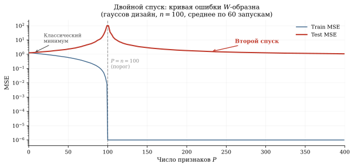
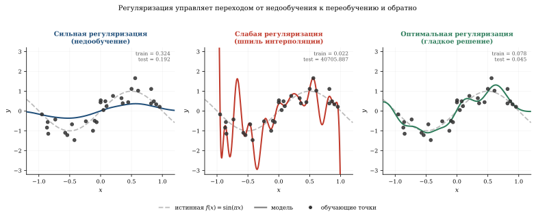

Феномен двойного спуска
Классическая статистика учит: увеличивай сложность модели — и ошибка на тесте сначала падает (модель учится), потом растёт (переобучение). Это U-образная кривая bias-variance tradeoff. Но в 2019 году Белкин показал, а Наккиран с коллегами подтвердили на нейросетях, что если продолжить увеличивать сложность дальше «точки переобучения», ошибка снова падает — и опускается ниже классического оптимума. Например, ResNet-18 на CIFAR-10 при критическом числе параметров выдаёт test error 25%, а при вдвое большей модели — ~8—10% (в зависимости от условий обучения). Это двойной спуск (double descent) — феномен, который ломает учебники.
Классический взгляд: bias-variance tradeoff
Для модели с параметрами \theta и тестовой ошибкой:
\mathbb{E}[(\hat{f}(x) - f(x))^2] = \underbrace{(\mathbb{E}[\hat{f}] - f)^2}_{\text{bias}^2} + \underbrace{\text{Var}(\hat{f})}_{\text{variance}} + \underbrace{\sigma^2}_{\text{шум}}.
- Bias (смещение): недостаточно сложная модель не может выучить зависимость.
- Variance (разброс): слишком сложная модель подстраивается под шум в обучении.
Классическая картина: при росте сложности bias падает, variance растёт, суммарная ошибка — U-образная.

Что происходит за порогом интерполяции
Порог интерполяции — это момент, когда число параметров p равно числу обучающих примеров n. При p = n модель точно проходит через все обучающие точки, но делает это «самым шумным» способом.
Belkin et al.1 показали, что если p > n (overparameterized regime), ошибка снова падает:
1 Belkin, Hsu, Ma, Mandal. Reconciling modern machine-learning practice and the classical bias–variance trade-off, PNAS, 2019.
\text{Test error} = \begin{cases} \text{U-shape} & p < n, \\ \text{пик (расходимость)} & p \approx n, \\ \text{монотонное убывание} & p \gg n. \end{cases}
Это и есть двойной спуск.
Демо: полиномиальная регрессия
import numpy as np
import matplotlib.pyplot as plt
np.random.seed(0)
n = 30
sigma_noise = 0.3
# Данные
x = np.random.uniform(-1, 1, n)
y = np.sin(np.pi * x) + np.random.randn(n) * sigma_noise
x_test = np.linspace(-1, 1, 500)
y_test_true = np.sin(np.pi * x_test)
# Степени полиномов: от 1 до 80
degrees = list(range(1, 81))
test_mse = []
train_mse = []
for d in degrees:
# Матрица Вандермонда
X_train = np.vander(x, d + 1, increasing=True)
X_test = np.vander(x_test, d + 1, increasing=True)
if d < n:
# Обычный МНК
coeffs, _, _, _ = np.linalg.lstsq(X_train, y, rcond=None)
else:
# Переопределённая система: решение с минимальной нормой
coeffs = X_train.T @ np.linalg.solve(
X_train @ X_train.T + 1e-12 * np.eye(n), y)
y_pred_train = X_train @ coeffs
y_pred_test = X_test @ coeffs
train_mse.append(np.mean((y_pred_train - y) ** 2))
test_mse.append(np.clip(np.mean((y_pred_test - y_test_true) ** 2),
0, 100))
fig, ax = plt.subplots(figsize=(12, 5))
ax.plot(degrees, train_mse, 'b-', lw=1.5, label='Train MSE')
ax.plot(degrees, test_mse, 'r-', lw=2, label='Test MSE')
ax.axvline(n, color='gray', ls='--', alpha=0.7,
label=f'Порог интерполяции (d = n = {n})')
ax.set_xlabel("Степень полинома (число параметров)")
ax.set_ylabel("MSE")
ax.set_yscale('log')
ax.set_ylim(1e-3, 50)
ax.set_title("Двойной спуск в полиномиальной регрессии")
ax.legend()
plt.grid(True, alpha=0.3)Что видно на графике
Классическая зона (d < n): ошибка сначала падает, потом растёт — U-образная кривая.
Пик при d = n: модель точно проходит через все точки, но с огромными коэффициентами — «шпиль» переобучения. Это interpolation threshold.
Сверхпараметризация (d > n): из всех полиномов степени d, точно проходящих через данные, выбирается тот, у которого минимальная норма коэффициентов. Этот implicit regularization приводит к гладким решениям и падению ошибки.
Потяни ползунок ёмкости через порог интерполяции d = n — и почувствуй, как ровно на нём подгонка взрывается «шпилем», а сразу за ним МНК минимальной нормы снова приводит кривую к гладкому, хорошо обобщающему решению.
Почему это работает: неявная регуляризация
При p > n система X\theta = y имеет бесконечно много решений. Метод наименьших квадратов (МНК, numpy.linalg.lstsq) выбирает решение с минимальной \ell_2-нормой:
\hat{\theta} = X^+ y = X^T (XX^T)^{-1} y.
Это эквивалентно \ell_2-регуляризации (ridge regression) с бесконечно малым \lambda. Минимальная норма ≈ гладкость ≈ хорошее обобщение.
При p > n МНК выбирает min-norm решение. Чем больше p, тем меньше норма \|\hat{\theta}\|, тем глаже функция, тем лучше обобщение — вопреки классической интуиции. Кривая ошибки не U, а W.
Из всех \theta, таких что X\theta = y, псевдообратная X^+ выбирает тот, который ближе всего к нулю:
\hat{\theta} = \arg\min_{\theta:\, X\theta = y} \|\theta\|_2.
В overparameterized regime это интерполирующее решение оказывается простым в смысле нормы, а потому обобщает.
Двойной спуск в нейросетях
Nakkiran et al.2 показали тот же паттерн для ResNet-18 на CIFAR-10 в трёх вариантах:
2 Nakkiran, Kaplun, Bansal, Yang, Barak, Sutskever. Deep Double Descent: Where Bigger Models and More Data Can Hurt, ICLR 2020.
Поширинный (model-wise)
Фиксируем число эпох, увеличиваем ширину сети. При ширине \approx порог интерполяции — пик ошибки. При дальнейшем увеличении ширины — ошибка падает.
Эффект виден далеко за пределами ResNet на CIFAR — тот же горб появляется и на маленькой сети, которую можно обучить за минуту. Ниже — настоящий MLP (один скрытый слой, ReLU, Adam), обученный на зашумлённых рукописных цифрах при растущей ширине:
Поэпохный (epoch-wise)
Фиксируем архитектуру, увеличиваем число эпох обучения. Ошибка на тесте сначала падает, потом растёт (классическое переобучение), потом снова падает при длительном обучении. Вывод: ранняя остановка в зоне «первого подъёма» бывает вредна.
По объёму данных (sample-wise)
Фиксируем модель и число эпох, увеличиваем n. Больше данных может временно ухудшить результат — если n попадает ровно в зону порога интерполяции.
Переопределённая аппроксимация
Двойной спуск проще всего наблюдать в задаче переопределённой аппроксимации — полиномиальной регрессии со степенью выше числа точек.
Зашумлённая интерполяция
Пусть f(x) = \sin(\pi x), n = 30 точек, шум \sigma = 0{,}3. При сильной регуляризации модель гладкая, но промахивается. При слабой — проходит через все точки, но дико осциллирует между ними. При оптимальной — интерполирует гладко, выбирая решение с минимальной нормой.

Почему это важно
Двойной спуск объясняет, почему современные нейросети с миллиардами параметров (GPT-4: ~1,8 трлн, по оценкам) обучаются на данных, через которые они могут точно интерполировать, — и при этом обобщают:
Больше параметров = лучше (при правильном обучении), вопреки классической интуиции.
Early stopping может быть вредным, если останавливаться в зоне «первого подъёма» test loss.
Больше данных не всегда лучше — может сдвинуть порог интерполяции и временно ухудшить результат.
Главный вывод. Кривая ошибки не U, а W: после «шпиля» переобучения следует второй спуск. Следствие для практики: если большая нейросеть переобучилась — не уменьшайте её, а увеличьте. Именно так работают все современные Foundation models: они существуют глубоко в зоне сверхпараметризации, где min-norm решение автоматически даёт обобщение.
Связи
- Метод наименьших квадратов (§ глава III): линейная регрессия как базовый случай
- SGD и Adam (§ Часть V): неявная регуляризация SGD через шум
- Ландшафт функции потерь (§ Loss Landscape): широкие vs узкие минимумы
- Универсальная теорема аппроксимации (§ Часть VI): больше нейронов = лучшая аппроксимация